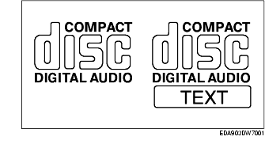

Reference [CD/MD]
• The CD player/changer has been designed to play CDs bearing the identification logo, COMPACT DISC DIGITAL AUDIO, as shown. No other discs can be played on the CD player/changer other than MP3 applicable one.

• The CD player/changer may not play the following CD:
- - Defective CD (e.g., cracked, badly bent, rough edges, scratch, dirty CD condensation)
- - 8 cm (3 in) CDs accessories (e.g., 8 cm (3 in) disc adapter, sticker, label)
- - Nonstandard CD (e.g., Diameter/thickness is out of specification)
- Specification: 119.7-120.3 mm (4.668-4.692 in) of diameter, 1.2+0.3 or -0.1 mm (0.047+0.012 or 0.004 in) of thickness
- - Do not use non-conventional discs. The CD player/changer could be damaged.
Examples:

• Although the same physical size as the compact disc, SACD uses a different kind of digital audio signal, Direct Stream Digital.
• The CD player/changer may not play the CD-R/RW properly due to the disc condition (excluding the MP3).
MP3-Formatted File
Outline of CD-R and CD-RW
- • Definition
- - CD-R: The CD-R is a non-rewritable version. Once a section of a CD-R is written, it cannot be erased or rewritten.
- - CD-RW: The CD-RW is a re-writable version of CD-ROM and the data can be written an unlimited number of times.
- - Since the reflected laser beam amount of a CD-R/RW is less than the reflected laser beam amount of the conventional CD media, the CD player/changer may not play the CD-R/RW or the sound may jump.
- - Since the recording quality of the CD-R/RWs vary widely, some CD-R/RWs may not play.
Recording method
- • There are two methods for recording.
- • Classification by recorder
- - Record the audio data in the audio-CD by audio recorder
- - Record the audio data to a conventional data-CD using a personal computer
- • Classification by audio data extraction/compression
- - Extracted audio data
- - Compressed audio data
- • It is possible to record a large quantity of music to a disc. The sound quality varies depending on the audio data compression format. The compressed audio data can be played on the applicable player only.
- - Types of compression format:
MP3
- • The following conditions should be met in order to record the MP3-formatted data to the MP3 applicable CD player: